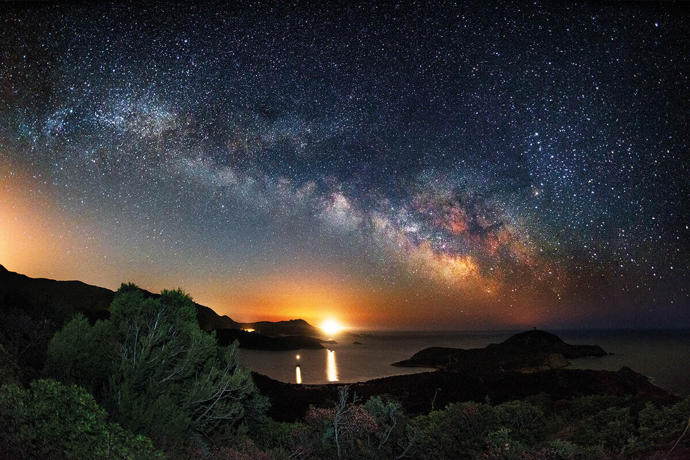
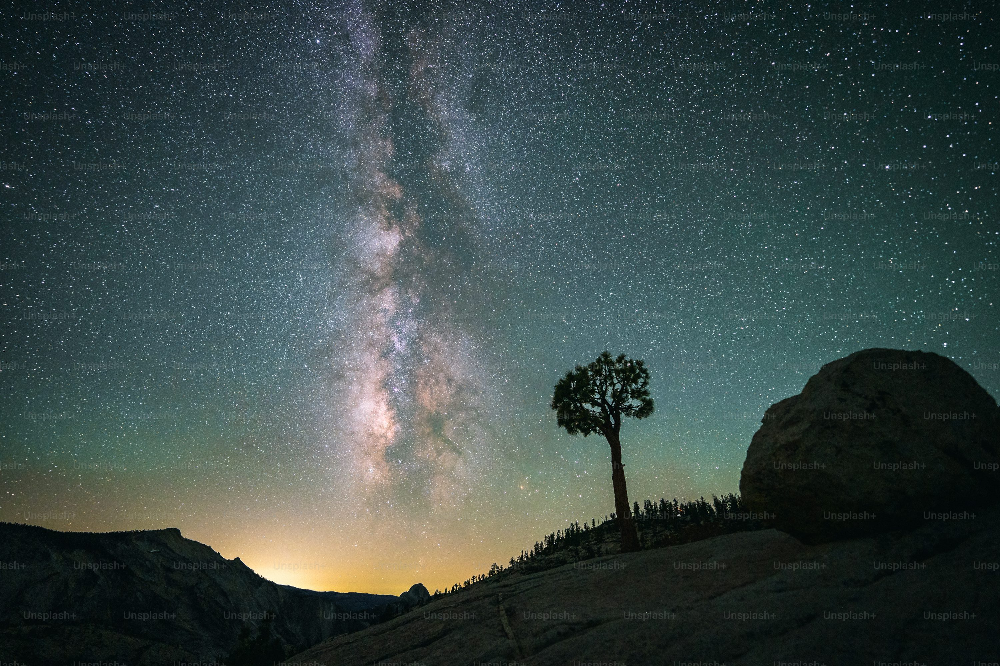

A tranquil lake view taken from a rocky shoreline under the night sky, with stars reflecting on the still water, creating a serene and otherworldly atmosphere
An expansive night sky filled with stars

A misty forest in the early morning, with sunlight filtering through the trees
A breathtaking view of the mountains at sunset, casting a warm glow over the peaks

A lone tree silhouetted against a mesmerizing night sky filled with stars, standing as a quiet witness to the vastness of the universe
A peaceful beach at dawn, with gentle waves lapping at the shoreline